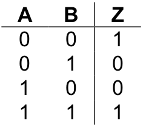
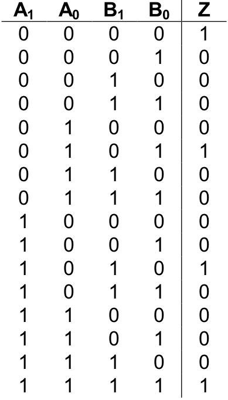
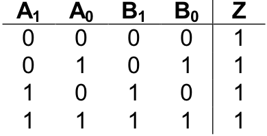
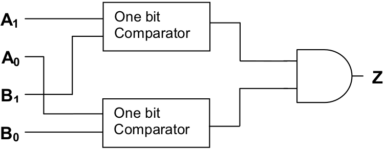
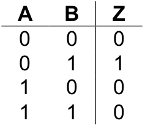

The purpose of a comparator is to examine two input values to determine whether a particular condition is satisfied. If the inputs satisfy the condition, the comparator generates a “1” (true). If the inputs do not satisfy the condition, the comparator generates a “0” (false).
The most common type of comparator is the “comparator for equality”. This type of comparator determines whether two input values are identical. If the values are the same, the comparator generates a “1” (true). If the input values are different, the comparator generates a “0” (false).
Comparators come in different sizes, based on the width of their inputs. The simplest comparator is the one-bit comparator for equality. This circuit takes in two single-bit numbers and generates a “1” if they are equal and a “0” otherwise. Here is the truth table for the one-bit comparator for equality. The inputs are labeled “A” and “B”. The output is labeled “Z”.
In order to implement a circuit with this behavior, we first note the lines of the truth table that generate a “1”. These are lines one and four. Let’s look first at line four. This line of the table says that Z should be “1” when both A and B are “1”. Implementing a circuit that will generate “1” under this circumstance, and no other, is trivial since the two-input and gate already does exactly what we want.
Producing a “sub-circuit” for line one of the table isn’t really that difficult either. In order to have a sub-circuit that generates “1” when both inputs are “0”, simply invert, or not, each of the inputs and send the results into an and gate, like so:
This sub-circuit will produce a “1” only when both of its inputs are “0”.
An implementation of the one-bit comparator for equality
Combining the two sub-circuits via an or gate gives a complete implementation of the one-bit comparator for equality. The circuit is illustrated in
The design for the one-bit comparator for equality can be extended to multi-bit numbers. The two-bit comparator for equality has the following truth table:
This table consists of 16 rows, since it has four input bits. (Remember, the number of rows of a truth table is always 2n where n is the number of input bits.) In the table, A0 represents the low-order bit of input A and A1 represents the high-order bit of A. Likewise, B0 is the low-order bit of B and B1 is the high-order bit. Hence, the first row of the table represents inputs of A = 00two and B = 00two , which are equal, so the output, Z, is “1” (true). Likewise, the second row of the table represents A = 00two and B = 01two , which are not equal, so the output, Z, is “0” (false).
To get a clearer idea of what this circuit does, let’s examine only those rows of the table in which the output is “1” (true). There are four cases in which the two-bit comparator for equality generates a “1”. They are:
The first row corresponds to the case where both A and B are zero (00two ). The second row captures the case where both inputs are one (01two ), the third where the inputs are two (10two ), and the fourth where they are three (11two ).
How can we build a circuit with this behavior?
In the previous examples we built sub-circuits to handle each case in which the main circuit was to produce “1”. We then connected the sub-circuits together using an or gate. Because the present circuit is a multi-bit version of a circuit we have already constructed, we’ll take a different approach to the circuit design problem.
When attempting to construct a multi-bit version of a single-bit circuit, it is best to approach the problem by looking for ways in which single-bit versions of the circuit can be interconnected to form the multi-bit circuit.
A careful inspection of the above table will show that a “1” should be generated whenever the low-order bits of both inputs (A0 and B0 ) are equal and the high-order bits of the inputs (A1 and B1 ) are equal as well. Hence, routing inputs A0 and B0 into a one-bit comparator for equality; and inputs A1 and B1 into a separate one-bit comparator for equality, then sending both of these results into an and gate, will produce a circuit with the desired behavior. This circuit is outlined below:
The circuit is based on the idea that two-bit numbers are equal if both their low-order and high-order bits are identical. An actual implementation of the circuit would require that the boxes marked “one-bit comparator” be replaced with comparator circuitry along the lines of that shown in . You are asked to do precisely this in one of the exercises at the end of this section.
In addition to comparators for equality, comparators for other conditions, such as “less than” and “greater than”, can be constructed. While most of the details are left as exercises, I’ll get you started by giving you this truth table for the one-bit comparator for “less than” (i.e., “A < B”).
Exercises for
Construct a two-bit comparator for equality using the outline of the circuit provided in this section.
Construct a one-bit comparator for less than. Also, provide a truth table and Boolean equation for the circuit.
(1) the high-order bit of A is less than the high-order bit of B
or
(2.1) the high-order bits of A and B are identical
and
(2.2) the low-order bit of A is less than the low-order bit of B
Construct a one-bit comparator for greater than. Also, provide a truth table and Boolean equation for the circuit.
Construct a two-bit comparator for greater than. Also, provide a truth table and Boolean equation for the circuit.